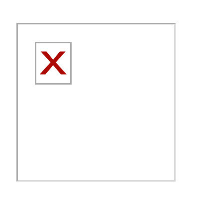

FQ QQQ QQQQQ的个人介绍
欢迎来看我的介绍！
主页
个人介绍
兴趣爱好
一点分享
王凡奇
男，2000年生人
网上冲浪的昵称：FQ，或者FQQ……QQQ（Q的数量不等）
目前是校艺术团合唱队队长，是校吉他协会下一任团支书
业余吉他手，业余乐队主唱
联系邮箱：940913696@qq.com
大学履历
专业上，由新媒体专业分流进入传播学（新媒体方向）专业，然后保持着专业最后后几名但是基本不挂科（除了学不会的高数）的水平跌跌撞撞迈进了大三，目前正在考虑是否考研，但目前重心还是在社团方面。
社团上，大一军训时稀里糊涂被校合唱队招进去并且参加了2018年的大艺节大合唱比赛，然后在2019年继任了合唱队队长；同时，在合唱队老师和学长的推荐下进入了吉他协会，并且成为了同届的核心成员之一，目前社团的故事还在继续……
感情方面：
